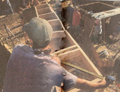

Building A Staw Bale House
Straw bale construction can be used in almost any climate to create a comfortable home.
By Athena and Bill Steen
December/January 1995
The low afternoon sun cast a warm, rich light on the straw bale walls of a newly completed structure. A mixed group of men, women, andchildren, most of whom had never built before, sat suspended in a sudden silence, admiring the space they had created over just the past few days. It was the summer of 1990, and we had just organized, through our nonprofit organization The Canelo Project, one of the first straw bale workshops at our home in the Canelo Hills of southeastern Arizona. At that time the only straw bale buildings were a few scattered historic structures, mostly in Nebraska, and a handful of simple structures built by modern straw bale pioneers.
Five years later we estimate that the number of new straw bale structures exceeds 400. Scattered throughout Australia, Canada, France, Mexico, Norway, and the United States, as well as remote sites in Mongolia and Russia, these buildings range from small, cozy cottages to large, multiple-story, elegant homes. Throw in the number of proposed projects in progress, and the number jumps to several thousand. Modest growth, to be sure, but when it is considered that a bureaucratic mountain must be moved every time local building codes are wrestled to allow for this "primitive" design, the number of projects is startling.
The lesson is quickly being learned that straw bales are an extraordinary material for building, a use for which they were never intended. They are superbly energy efficient, environmentally safe, fun, simple to work with, and can be used to build structures that are durable, innovative, and beautiful. With a high level of owner, family, and friend involvement, common sense, and the incorporation of recycled, salvaged, and local materials, the cost of a straw bale structure can also be very low. What's more, it will be significantly better insulated (R-40 to R-60), more comfortable, and typically have a greater degree of aesthetic character than a home built from a standard 2 x 6 frame. We have seen bale structures cost anywhere from $5 a square foot to well over $100 a square foot, depending upon the luxuries thrown in. Many of these bale homes have received building permits, have been bankfinanced and are completely insured.
How Does Straw Hold Up a Wall?
Straw refers to the leftover stems of harvested cereal grains (wheat, rice, oats, barley, rye), which is sometimes used as bedding for animals, but is often viewed as a waste product and simply burned. Bales can also be made from other fibrous materials, such as bean or corn stalks, pine needles, or any kind of grass. Many of the first bale buildings were constructed from baled meadow grass. With no trees to build with, necessity truly became the mother of invention and early settlers built with the only thing they could-the sea of prairie grass that surrounded them.
To build with straw bales requires a good understanding of the basic characteristics of straw and how it behaves as a building material. In general, straw and other natural fibers have low compressive strength but when twisted, interwoven, bundled, baled or combined with other materials like clay, their compressive strength improves dramatically and they can then be used for a variety of structural and nonstructural building applications. However, it is important to remember that despite the improvement in strength, bales do compress under loads. The more compact the bale, the less it will compress. Bales you use for building should be solid, compact, and keep their shape when you handle them, especially if they will be asked to support the kind of bearing walls that we will ask them to.
And yes, you can fire up the wood, stove in a bale home. Densely baled straw limits the amount of oxygen needed for combustion to take place, and is therefore very resistant to fire. Fire testing, conducted in New Mexico through The Straw Bale Association, demonstrated that an 18-inch straw bale wall survived fire penetration more than two hours, while an unfinished wall survived for just 34 minutes. Loose straw, of course, is very flammable and can be a hazard. During construction, we have seen sparks from a grinder or welder ignite piles of loose straw that had collected at the base of the walls. If you use loose straw for roof insulation, treat it with a suitable fire retardant. We have often used borax and a product called Nochar Fire Preventer to do the job.
Keeping Bales Dry
Understanding the relationship between baled straw and moisture is critical to the successful construction of a durable straw bale building. When natural fibers are bound into bales they become more susceptible to moisture damage because it is more difficult for air to reach the interior of the bale and allow drying to take place. The interior of bales most often becomes wet when they are either baled wet or rain falls directly on them from above. Eventually they can dry, but usually not until mold or rot has affected them. Dry healthy bales will be bright and evenly colored, without signs of discoloration or deterioration. The sides of the bales are much more resilient and will dry out fairly quickly after a rain. One straw bale house in eastern Washington has remained unplastered for more than 10 years. Problems can occur, however, if the sides become wet and something is placed against them that does not allow sufficient air circulation.
Bales stored in stacks are even more susceptible to moisture problems due to lack of air circulation, particularly where the bales rest on the ground. We have seen hundreds of good bales ruined from poor storage. Experience has shown us that large and tall stacks are very unmanageable for most people. Smaller multiple stacks, that are not to tall or wide, are easier to cover and uncover. Crowning the stacks helps to shed rain quickly. Wood pallets are a convenient way to elevate stacks of bales above the ground, and provide a convenient location to tie down tarps. We use only good quality waterproof tarps to cover bales in storage and check them regularly. The blue poly tarps commonly found in many retail outlets don't last (especially in the sun), and are only moisture resistant, not waterproof. If bales will be stored for only a short period of time, sixmil plastic can be used underneath poly tarps for additional protection. Waterproof industrial PVC tarps are much more durable and should be used if the bales are to remain in storage for any length of time. Silver-coated tarps are a reasonable priced and durable alternative.
Bales are also susceptible to moisture damage during the construction process. The tops of the walls and the window sills are vulnerable points where rain can penetrate to the interior of the bale. Once that happens it is very likely mold or rot will commence before drying takes place. You should keep coverings for these points handy if rain threatens. Flakes of bales or loose straw can suffice if the rain is light. These points are typically given an additional measure of protection from moisture, such as black felt paper, before the final finishing of the walls. Generous roof overhangs will help to keep rain away from the base of the walls and all soils surrounding the building should be graded to ensure good drainage.
The point where the bales rest on the foundation is equally vulnerable. The top of the foundation should be elevated at least a minimum of six inches above grade and be moisture-proofed to protect the bottom of the first course of bales. A combination of asphalt emulsion and black felt has been the most common way of moisture-proofing foundations for straw bale buildings. Polymer-modified asphalt is more durable over time and has greater ability to span cracks that could arise due to settling or shrinkage. One other product that comes highly recommended is Safecoat DynoSeal. This neoprene-modified asphalt emulsion is nontoxic and can be used by chemically sensitive people. Cementitious coatings like Thoroseal are durable and breathe, which could help minimize any possible condensation problems, but don't stretch and will tend to crack where foundations do.
If the floor and the top of the foundation are the same height, as occurs with a monolithic concrete slab, there is always the danger that rain or water from minor flooding could puddle on the slab and seep between the first course of bales and the moisture-proofing. To alleviate this problem, many have started elevating the portion of the slab where the bales are placed a minimum of four inches above floor level. Placing polystyrene board on top of the moisture-proofed foundation would also elevate the bales as well as provide a thermal break between the first course of bales and the cold concrete, an extra insurance against potential condensation problems.
Grade beams that float on rubbled trenches (a variation of the "floating slab") have been a popular foundation option. The rubble trench extends below the frost or clay line, affording excellent drainage and reducing the amount of concrete needed for the extra wide bale walls.
Moisture damage could also happen if condensation oc curred within the bale wall cavity. Less is known about the behav ior of humid air within bale wall cavities than al most any other area. Warm air holds more moisture than cold air, and the differences in hu midity and tem perature cause it to move toward cooler surfaces. When warm hu mid air meets its dew point it be gins to condense. Many different variables make it difficult to know where the dew point occurs within a wall cavity, however the more humid the air, the higher the po tential for water accumulation. A level of 35 percent humidity is generally consid ered safe for the interior of a building.
Recent testing (monitoring the humidity in the wall of a straw bale house in Nova Scotia), demonstrated that the level of humidity remained below the point where deterioration of straw would occur due to microbial activity. Further testing is planned to determine if in-wall condensation does occur. The Burritt Mansion, built in 1937 in Huntsville, Alabama, which is a warm, humid climate, has exterior siding and appears to be in good condition today. The key in all these cases may be that the wall surfaces and finishes have retained sufficient "breatheability" to allow moisture to pass freely through the walls. Differences in wall finish permeability need to be considered carefully. The exterior wall surface should be more permeable than the interior wall in cold climates like the Northeast and Midwest. The reverse would be true in warm, humid climates using air-conditioning, like the South and Gulf Coast states.
When in doubt, following the same moisture protection practices that are in existence for a given climate and location would most likely be a sound strategy.
Bale Sizes and Characteristics
Straw bales typically used for building come in two different sizes and are generally referred to as two-string and threestring bales. Typically, different geographic regions will tend to have primarily one type or the other. For example, threestring bales are common in the state of Arizona, while two-string bales are common in New Mexico. Prices will vary depending on how close you are to where the crop of straw has been grown. They can run as low as $.50 if no transportation is involved, or as much as $3.75 to $4.00 if they need to be moved any distance. The best value will typically be from a wholesaler or grower rather than a retail feed outlet.
Bales come with either polypropylene twine or wire. For us, the poly twine is much easier to work with when it comes to modifying bales both in terms of size and shape. Another important factor, especially when bales are used in applications where they are expected to carry loads, is that wire can rust and break, jeopardizing the integrity of a wall.
Bales have three different linear measures: height, length, and width. When the wider side, or the width is laid parallel to the ground, it is commonly said that the bale has been laid flat. When the narrower of the two sides is laid parallel to the ground, the bale has been laid on edge. Three-string bales offer the greatest amount of stability because of their width and density especially when laid flat, while both types of bales are less stable when laid on edge.
If space is a major consideration it could be advantageous to lay the bales on edge, creating a slightly narrower wall. When laid in this manner, the twine or wire is exposed and can be a convenient attachment point for stucco netting or furring strips. In this position, bales have slightly more insulation value per inch, but significantly less compressive strength and are better suited to applications where the bales will not be carrying heavy structural loads. In contrast, bales laid flat have more than four times the compressive strength than bales on edge, are more stable, offer an excellent surface for plaster adhesion without any stucco netting, and, since the bale wires or twine are not exposed, the bales can be more easily carved, notched. or modified.
During construction builders usually need custom-size or half bales. A bale needle comes in very handy for such modifications, and can be fabricated from a three-foot length of five-sixteenth-inch steel rod. The bale needle threaded with baling twine is pushed through the bale at the desired length and tied off before the old bale strings or wires are cut.
Often the thickness of the walls, especially with smaller openings, blocks much of the light and view. Beveling the bales to create an angled opening allows more light to enter the room.
You can also cut bales lengthwise, notch them to accommodate posts, and carve into them for creating niches and shelves. The most common tool builders use has been the chainsaw, although people use a variety of tools, including antique hay saws, hand saws, electric grinders, machetes, and serrated kitchen knives. Mechanical tools produce a large volume of small straw particles and straw dust which can be hard on gasoline operated tools. Unlike electric chainsaws, gasoline powered chainsaws need to have their air filters and cooling fins cleaned regularly to prevent them from overheating and wearing out. The best manual tool we have used was an old hay saw, which unlike any others we have seen had very fine serrated teeth. We have found that we often use a variety and combina tion of tools, depending on the shape and size of the desired cut or the type of straw or hay that has been baled. For example, a sharp machete works well with wheat and oat straw, but is useless with the woody stems of Johnson grass bales.
Bale Wall OptionsLoad-Bearing Walls
In this wall construction system the weight of the roof bears directly on the bale walls without the assistance of any structural framework. Three-wire bales are most often preferred for this wall system, although two-wire bales have been used. The bales are laid flat and stacked like bricks in a running bond (joints staggered) and pinned together with any suitable material that reinforces the wall. Rebar and bamboo are most commonly used as pins. The first course of bales are impaled onto pins anchored into the foundation, usually two pins per bale. The subsequent courses are then pinned (again, two per bale) at the fourth, sixth and seventh courses with fivefoot pins. Door and window frames are designed to carry the vertical loads from above.
A horizontal structural assembly called a roof plate is laid on top of the bale walls to bear and distribute the weight of the roof. An ideal roof plate would be stiff enough to resist sagging or bending while carrying the loads from above, especially over door and window openings. Vertical 2x6s with 2x4 blocking on a plywood base make a good roof plate. Variations using TJI joists and various wood box beams are also being used, as well as masonry or concrete bond beams.
An integral part of a load-bearing building is the roof plate tie-down system. Threaded steel rod, polyester cord strapping, and wire cable are the most commonly used materials for making connections between the roof plate and the foundation. The threaded steel rod and the strapping can be tightened down to help precompress the walls without waiting for them to settle on their own. The amount of compression will vary according to the quality of the bales and the load of the roof. The average range seems to be anywhere from 1.5 to 3.5 inches. If the walls are not completely settled or precompressed before they are finished or stuccoed, there could be cracking and other problems.
Another point to remember is that load-bearing walls are also comprised of door and window bucks, which are made of noncompressible materials. In other words, sections of bale walls that contain rigid frames will compress less than other sections that contain only bales. Allowance needs to be made for these differences or differential settling can occur. For this reason, we feel that load-bearing designs are best suited to simple square or rectangular shaped single-story structures with a limited amount of window and door openings.
As part of an effort to bring load-bearing construction to a level of code compliance in southern Arizona, panels of unstuccoed three-string bales were tested for compression, transverse lateral loading, and in-plane lateral loading. This testing demonstrated that these unfinished panels could successfully withstand lateral and vertical loads. These tests also helped make possible the development of prescriptive standards for load-bearing straw bale construction for the city of Tucson and Pima County, Arizona, which will be included in their building codes as of January 1996.
Some examples of the requirements for these prescriptive standards are as follows: Load-bearing structures must be limited to one story, with the height of the wall not to exceed 5.6 times the wall thickness (23 inch wide wall = 10 feet 8 inches). Unsupported wall lengths can be 15.7 times the wall thickness (23 inch wide wall = 30 feet) with allowable vertical loads on top the wall not exceed ing 400 pounds per square foot.
Since bales of straw are somewhat elastic in their compressive character, their performance in regions with frequent and heavy live loads of snow is not yet well understood or documented.
Bale In-Fill Systems
In-fill buildings combine a structural framework with bale wall panels. The structure, which can be wood, steel, masonry/concrete or ha bamboo, ca r ries all the vertical loads. Typically the structure is put up first, the bales notched and fit around the posts or columns. In a few buildings, the bales were first stacked like in a load-bearing structure, notched once in place and a post-and-beam structure later inserted. This can speed up the construction process for small, simple structures, but can only be done if the posts are small enough (4x4s) so that the strings of the bales are not affected in the process.
The bales in the walls are pinned like load-bearing walls but they also need good solid connections to the structural supports and beams. Strips of expanded metal lath have been the most common method. Another option that has been used is to lay ladder-like sections of durowall, on top of each or every other course of bales and then pinning or tying it to the bales below. Sections of threaded rod can also be inserted through the posts and out the other side of the bale wall where they can be secured with seismic plate washers.
It was once commonly thought that infill methods automatically meant more lumber consumption than load-bearing buildings. One clever design, which has been called a modified post-and-beam, has reversed that thinking by using less lumber than a duplicate building that had been built as a load-bearing structure. It came about by adding extensions to the window and door bucks that were com monly being used with load-bearing buildings so that they could serve as the structural supports in combination with 4x4 posts at the corners. These were connected to a small-dimension, glue-lam beam, which saved considerable lumber in comparison with the traditional loadbearing roof-plate.
The in-fill approach affords greater design flexibility for larger structures with complex floor plans. Multiple stories, complicated roof configurations, and large amounts of glazing are possible. The structure can be roofed before the bales go in, and if the bales in the wall were to become damaged by moisture and lose their integrity, they could be replaced without affecting the structure of the building. Bale in-fill approaches are typically more acceptable to code officials and can make building permits easier to attain. Prescriptive standards for in-fill bale construction are included in the Tucson and Pima county codes and in-fill code language has been developed for the state of New Mexico and is waiting approval. Transverse load tests have also been successfully conducted in New Mexico as part of their code approval efforts.
Hybrid Straw Bale Options
Hybrid bale structures have begun to borrow from both the in-fill and load-bearing systems. Standalone structures require that columns or posts have sufficient thickness and strength to resist buckling. However, very small dimensional lumber like 1x2s sticks, or bamboo, when braced against the exterior and interior surfaces of the bale walls, can have sufficient strength to be structural.
In Mexico, where the bales were of such poor quality, or where the walls are extremely tall and long, we have used bamboo or rebar in this same way to add incredible strength and stability to the otherwise precarious load-bearing bale walls.
Wall Finishes
The majority of straw bale buildings in the United States have been finished with cement stucco, while many in Canada and France have been finished with traditional lime plasters. Gypsum plasters have also been popular for interior applications, as have earth plasters. Earth can also serve as a very effective exterior finish depending on the conditions, climate, and stabilizers.
Straw bale walls will typically use 50 percent more material when it comes to stucco or plaster and therefore it is important to use a reinforcing material capable of handling those loads, such as 17-gauge stucco wire. The wire is typically sewn to the bales with a baling needle and twine. Large, U-shape pins are also used.
Some plasters can be applied directly to the surface of the bales without reinforcing wire, like gypsum and earth plaster. Cement and lime are highly alkaline, which can cause deterioration of natural fibers. Lime, however is compatible with earth and could be applied over a base coat of earth plaster.
Finishes need not be limited to cement, stucco and plaster, however. Several of the historic bale structures have exterior siding and interior wood paneling. Other wall finishes and coverings on recent bale buildings include wood siding, celotex, plywood, and Sheetrock. These finishes require some provision for attachment to the bale walls. In some cases vertical 1x2 furring strips have been sufficient. Many of these products have varying degrees of permeability and require sufficient thought about moisture migration patterns. For example, using an impermeable material like exteriorgrade plywood on the outside of a building in a cold climate with high heating requirements could lead to serious problems unless the interior wall has an equal or higher level of impermeability.
Getting Started
Once you are ready to venture out on your own, you will find that starting with a small structure like a play house, a shed, or an outhouse, rather than a "real" house, is much less intimidating and any mistakes will be small, inexpensive ones. Remember that although building with bales has evolved quickly, it's still very much in its infancy, with much of its potential still undiscovered. Let yourself have fun.
Attempting to secure a building permit will typically be a process involving a couple of dialogues with local building officials. Existing prescriptive standards and test results can help support that process, as can officials who have experience in dealing with straw bales. A working paper, "Straw Bale Construction and the Building Codes," by David Eisenberg (The Canelo Project), can make a good starting point.
There is a growing straw bale human resource base of individuals and organi zations now working, building, designing, and teaching throughout Canada, Europe, the United States, and other parts of the world. The best way to access this resource base, as well as the latest straw bale innovations, information, and resources, is through the newsletter, The Last Straw, published quarterly by Out On Bale (un)Ltd.
Athena and Bill Steen are the authors of The Straw Bale House, a complete guide to the design and construction of straw bale homes. Bill and Athena also run the nonprofit organization The Canelo Project, which also distributes a good selection of books, printed information, and videos on straw bale building. Their workshops, also guided by architectl builder Paul Weiner, run anywhere from four to six days, and cover every aspect of the straw bale building process. During the winter, they offer straw bale work-tours in Mexico.
FOR MORE INFORMATION
The Canelo Project
Athena and Bill Steen
HC1 Box 324
Elgin, AZ 85611
(520) 455-5548
Written materials, videos, test results, workshops, work tours.
The Last Straw
Out On Bale (un)Ltd.
1037 E. Linden St.
Tucson, AZ 85719
Report by the Technical University of Nova Scotia
Moisture, Thermal and Mechanical Properties of Straw Bale Houses
Straw House Herbals
R.R. #1
Ship Harbour, Nova Scotia
Canada, BOJ1Y0
(902) 845-2750
Nochar Fire Preventer
(513) 426-9925
Northem Tarps
1-800 533-5545
DynoSeal American Formulating and Manufacturing
San Diego, CA (619) 239-0321
Construction Sequence for Load-Bearing and In-fill Straw Bale Buiilding General Guidelines
STEP 1 DESIGN and SITING CONSIDERATIONS
Keep it small and simple to reduce financial and ecological costs. Incorporate passive solar principles to take full advantage of the super-insulated bale walls. Orient long axis of building east to west for maximum solar gain and incorporate regionally appropriate amounts of glazing and thermal mass. Select building materials that are energy efficient, have low embodied energy, have been recycled or salvaged, are nontoxic, safe, and beautiful. Site building appropriate to its function, aesthetics, the land, and environment. Build as much as you can with family, friends, and those wanting to learn.
STEP 2 SELECTION AND STORAGE OF BALES
Select only dry, compact bales and purchase as close to the time of the wall-raising as possible. Average the size of the bales for height, length, and width. Store the bales off the ground in small, multiple, crowned stacks. Cover with good quality tarps that are securely fastened.
STEP 3 FOUNDATION
Make the foundation as wide as the bales and elevate it at least six inches above grade and four inches above the finished floor level. Bales can be used as formwork for foundation. If a tie-down system for the roof plate will pass through the foundation, provisions such as PVC pipe need to be placed. Set any anchor bolts or eyebolts needed. Place rebar pins for impaling the first course of bales. Moisture-proof the top of the foundation.
LOAD-BEARING BALE WALLS
Steps 4 through 7 are different for load-bearing and in-fill
STEP 4 WINDOW AND DOOR BUCKS
Fabricate window and door bucks Attach door bucks to the foundation.
STEP 5 WALLRAISING
Install braces at corners. If using all-thread, screw on 3-ft. length sections to anchor bolts in the foundation, adding sections with coupling nuts as needed. Stack bales (laid flat), overlapping the joints, starting at corners and door bucks. Never force bales into place. Staple or tie together corners at each course. Install window frames as walls go up. Level and adjust walls. Pin bale walls at 4th, 5th, and 7th courses with 5-ft. long rebar or bamboo pins, two per bale. Moisture-proof tops of window sills with plastic of black paper.
STEP 6 ROOF PLATE OR BOND BEAM
Protect top of walls from rodents and moisture with black paper and metal lath. Construct and install roof plate or bond beam. Attach roof plate to the foundation via all-thread, wire cable, or polyester cord strapping. Precompress the walls if desired.
STEP 7 THE ROOF
Construct roof framework-rafters, trusses, etc. Install insulation, ceiling, and roof surfacing.
IN-FILL BALE WALLS
STEP 4 THE STRUCTURAL FRAMEWORK
Engineer the structure to meet local requirements. Construct post and beam, modified post and beam, timber frame, masonry columns with wood or concrete beams, steel frame or bamboo structure.
STEP 5 THE ROOF
Construct the roof, leaving the space above the bale walls open to facilitate pinning the last course of bales.
STEP 6 DOOR AND WINDOW BUCKS
Build the window and door bucks if they are not already part of the structural framework. Install the door bucks.
STEP 7 BALE WALLS
Stack bales and notch to accommodate any columns. posts, or elements of the structure as needed. Starting each course at the corners and door or window bucks can be helpful. Set window bucks in place as the walls go up and lintels if needed. Pin the bale walls with rebar, wood, or bamboo, two per bale, so as to penetrate at least two and 1/2 courses of bales. Protect the tops of the walls from rodents and moisture. Moisture-proof the tops of the window sills.
common to both load bearing and in-fill walls
STEP 8 WALL PREPARATIONS
Trim and curve bales at corners and openings. Trim bale wall surfaces to get a good plastering surface (weed-eaters work well), especially if not using stucco wire. Fill any cavities in the wall with loose straw or a straw and mud mixture. Install electrical boxes and wiring. Provide attachment points for cabinets, shelves, or siding/Sheetrock. Apply stucco netting to walls. Apply black paper and expanded metal lath to any wood surface that will be plastered or stuccoed.
STEP 9 SURFACING THE WALLS
Allow building to fully settle (3-10 weeks) if not precompressed. Apply stucco, plaster, siding, Sheetrock or paneling.
|
Solid, rugged, inexpensive, and twice as fireproof as conventional lumber ... straw bale construction is an idea whose time has come. |
Stacking bales. |
Stacking the corner bales for a load-bearing building. |
|
Curving a bale. |
 Installing a box beam roof plate on a load-bearing structure. |
Builders pin bale walls with rebar or bamboo. |
|
The roof plate is designed to carry the vertical loads above this simple window frame. |
 Poly-cord strapping attaches the roof plate to the foundation. |
Earth plaster stabilizers are from natural materials such as cooked prickly pear, or manufactured ones, such as glue. Straw is critical reinforcement material in earth plaster. |
|
Constructing the roof plate fo a load-bearing structure. |
 Bill Steen applying earth plaster wall finishing. |
|